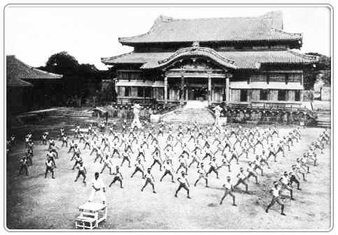

Historia del Karate

Orígenes y desarrollo del Karate
El Arte Marcial conocido como Te, surgió en Okinawa como uno de los sistemas de combate, desarrollado como método de defensa personal, debido a la prohibición de las armas, impuesta por los gobernantes Japoneses en el Siglo XVI sobre la Población de Okinawa. Uno de los principales maestros reconocidos de esta forma de combate fue Shungo Sakugawa (1733-1815), que recibió su instrucción directa de un monje llamado Peichin Takahara.
Isla de Okinawa
Shungo Sakugawa enseño el arte Marcial a Soken Matsumura (uno de los artistas marciales más grandes de la historia). La raíz de la mayoría de los estilos de Karate que se desarrollaron en Okinawa, se encuentran en la conexión Sakuwaga-Matsumura. Se desarrollaron tres centros de estudios importantes de Karate en Okinawa en el siglo XVIII. Uno de ellos estaba en la antigua capital de Shuri, donde vivían los nobles y la familia real. El segundo centro se formo en Nahara, en el puerto principal de la isla. Y el tercero en Tomari. Cada una de estas ciudades eventualmente desarrollo su propio estilo.
Shuri-Te
Sakuwaga también fue considerado como uno de los maestros de Shuri-Te, debido a que vivía en esta ciudad, este tenia casi 70 años, cuando un niño llamado Matsumura empezó a entrenar con él, convirtiéndose éste en su mejor alumno, luego de la muerte de Sakugawa, Matsumura llego a ser el mejor Instructor de Shuri-Te. Este estilo fue influenciado por estilos duros de Shaolin.
Tomari-Te
Tomari esta cerca del pequeño pueblo de Kumemura, que estaba habitado por un gran numero de militares entrenados en distintos estilos de Artes Marciales. Entre todos estos estilos habían sistemas duros descendientes del Templo Shaolin, a igual de estilos internos que procedían de otros lugares de China, por lo que el Tomari-Te fue influenciado tanto por estilos duros como por los suaves. Uno de los primeros maestros de Tomari-Te fue Kosaku Matsumora, quien enseñaba el estilo en secreto, sin embargo unos pocos estudiantes de Matsumora llegaron a conseguir un nivel lo suficientemente notable como para pasar el Arte. Otro importante instructor de Tomari-Te fue Kokan Oyadomari, el primer instructor del gran Chotoku Kyan.
Naha-Te
De los tres estilos significativos de aquella época en Okinawa, el Naha-Te era el estilo que más fue influenciado por los sistemas internos chinos y el que menos contacto había tenido con la tradición de Shaolin. El maestro mas grande de Naha-Te fue Kanryo Higashionna, quien estudio con Matsumura del estilo Shuri-Te, pero solo durante un periodo corto. Kanryo Higashionna era muy joven cuando se traslado a China, donde permaneció durante muchos años. Cuando regreso a Naha, abrió una escuela que enfatizaba patrones de movimientos de respiración muy utilizados en los estilos internos chinos, este tuvo grandes alumnos que llegaron a ser famosos por ellos mismos, entre los que se encontraban Chojun Miyagi y Kenwa Mabuni.